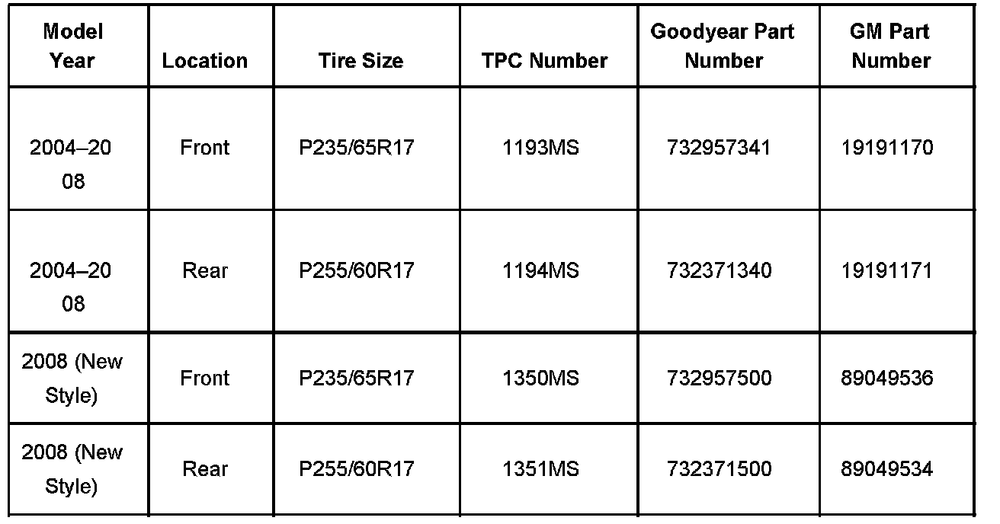

Tires - Revised Goodyear RS-A Tire Style and TPC Number
Bulletin No.: 07-03-10-009ADate: November 01, 2007
INFORMATION
Subject:
Information on Revised Goodyear RS-A Tire Style and TPC Number
Models:
2004-2008 Cadillac SRX
Attention:
Vehicles built after Aug 15, 2007 or VIN 80112115 are equipped with a revised version of the Eagle RS-A tire.
Supercede:
This bulletin is being revised to update the usage chart with new GM and Goodyear part numbers. Please discard Corporate Bulletin Number 07-03-10-009 (Section 03 - Suspension).
Goodyear RS-A Tires
The Cadillac SRX has been equipped with Goodyear RS-A all-season performance tires since the start of production in 2004. For the 2008 model year, this tire has been revised, though it retains the same "Eagle RS-A" designation. The TPC number on the side of the tire has been changed to identify new style from old style tires.
The revised RS-A tire was phased in after the start of 2008 production. Please observe the TPC number on the sidewall to verify the style of Eagle RS-A tire that the vehicle is equipped with.
Both Styles Still Available
While supplies last, both styles of Eagle RS-A continue to be available. When ordering replacement tires, you should keep tires to matched sets. If older vehicles equipped with the original style tire require a FULL SET of replacements, please update the vehicle to the new style.
Eagle RS-A Tire Usage for Cadillac SRX

Because the new style tire has a different construction from the old style tire, it has a different TPC number. Due to the inherent differences in tire construction, it is recommended, where possible, that the new style tire not be mixed with the old style tire.

Disclaimer